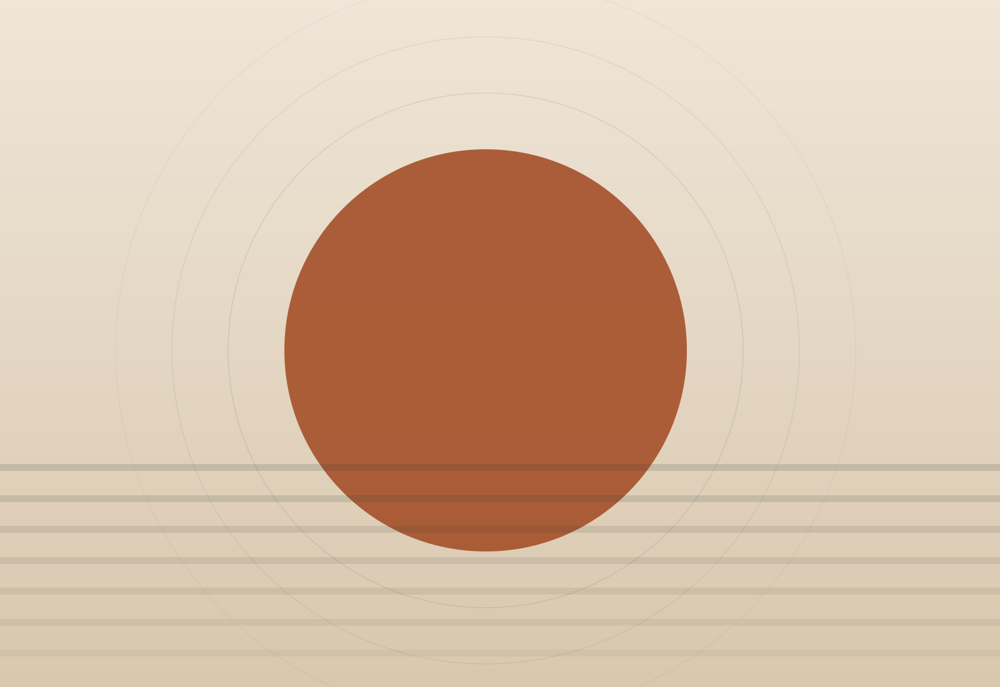
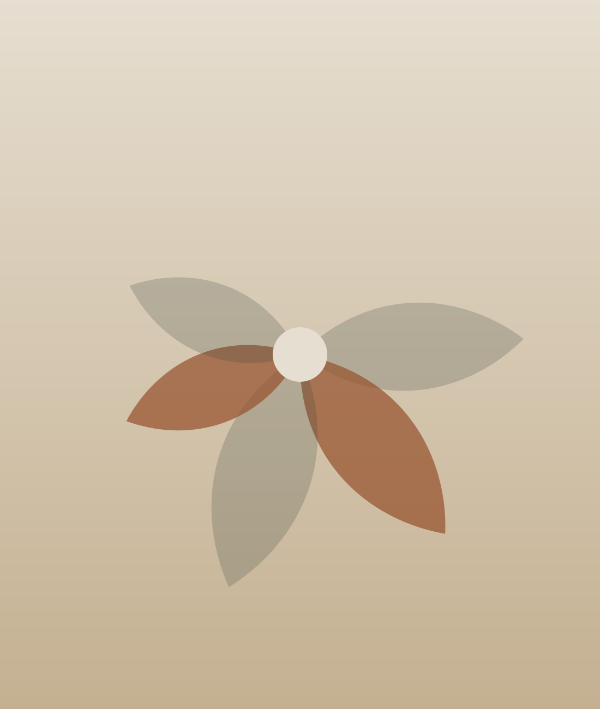
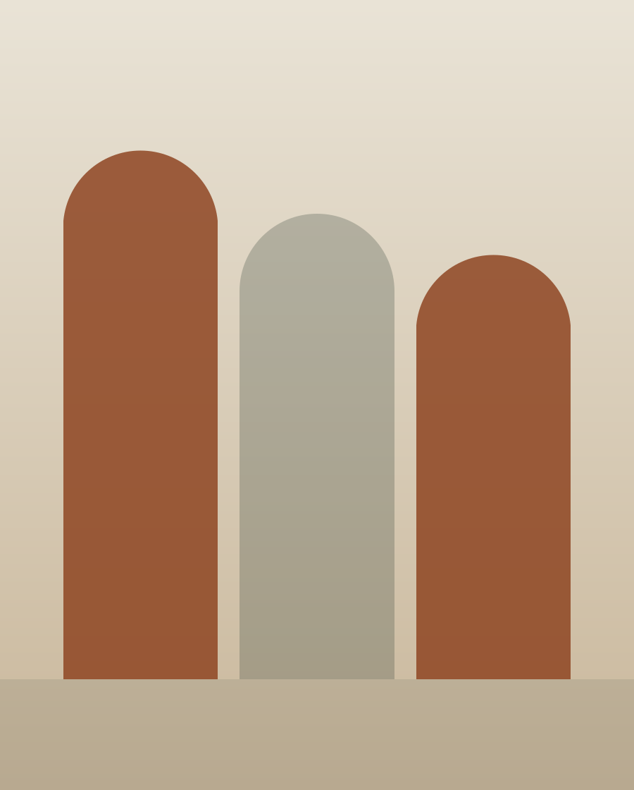
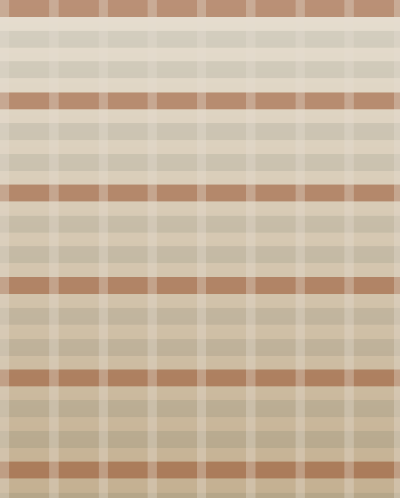
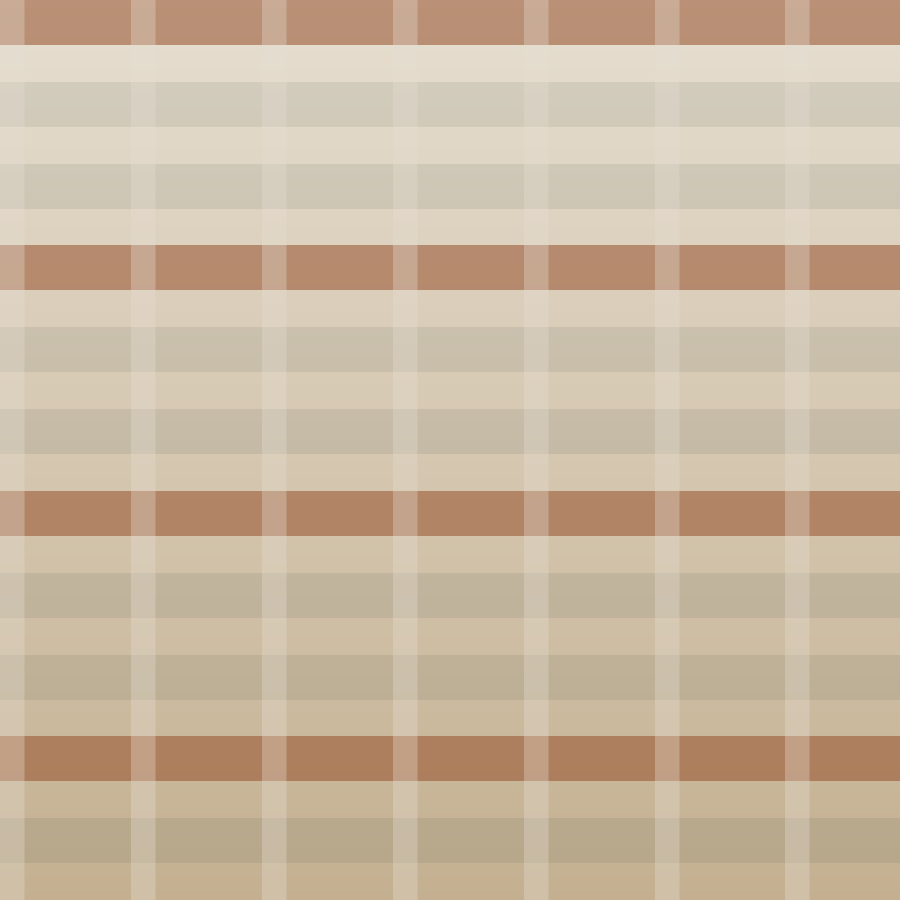
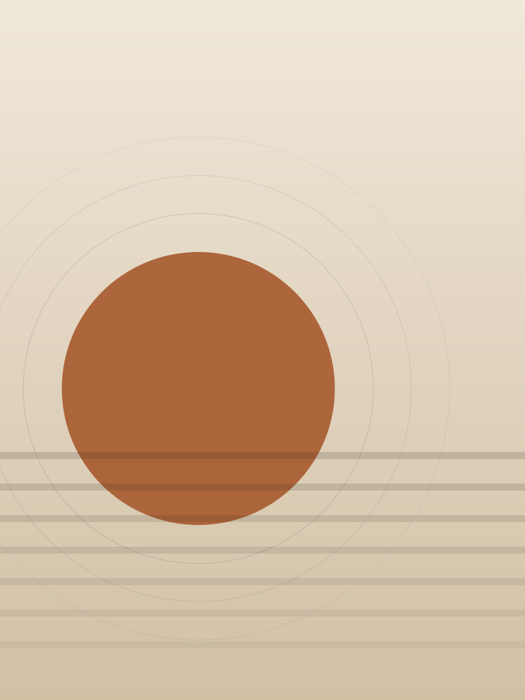
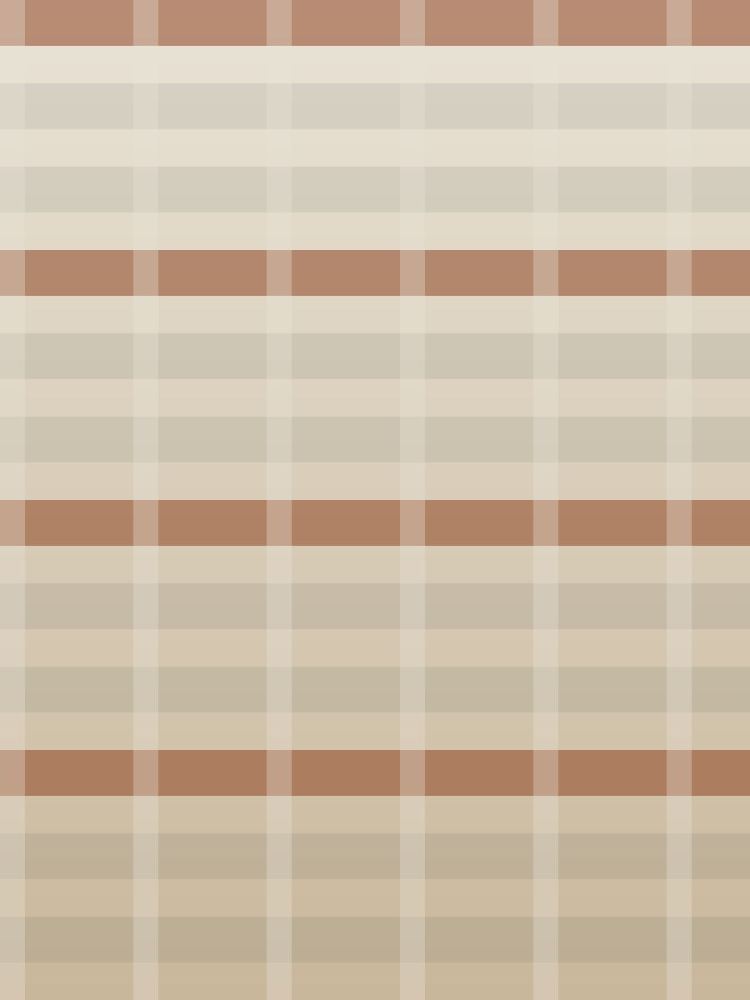

Marca brasileira · Peças autorais
Feito à mão,
feito com propósito.
Made in Jua nasce do cuidado com o detalhe: peças pensadas uma a uma, com materiais escolhidos a dedo e acabamento que se percebe no toque.


Sobre
Sobre a Made in Jua
A Made in Jua é uma marca brasileira construída em torno de um jeito próprio de fazer: poucas peças por vez, atenção ao processo e respeito pelo material.
O trabalho da marca é acompanhado de perto no Instagram @madeinjua, onde as novidades, os bastidores e os lançamentos são publicados primeiro. É por lá também que acontece o contato direto com quem quer conhecer, encomendar ou tirar dúvidas.
-
Feito à mão
Produção artesanal, em pequena escala, com controle de qualidade peça a peça.
-
Autoral
Criações próprias, com identidade reconhecível e sem repetição industrial.
-
Próximo
Atendimento direto, sem intermediários, do primeiro contato à entrega.
Coleção
O que a marca cria
Os itens abaixo são espaços reservados. Substitua imagem, título e descrição pelas peças reais publicadas no Instagram da marca antes de colocar a página no ar.
-

Foto da peça — substituir -
Foto da peça — substituir -

Foto da peça — substituir
A coleção completa e atualizada fica no Instagram da marca. Ver no @madeinjua
Galeria
Bastidores e detalhes
Espaços reservados para os registros publicados pela marca. Troque cada arquivo em
assets/img/ mantendo as proporções indicadas.
-
Imagem 1 — substituir -

Imagem 2 — substituir -

Imagem 3 — substituir -
Imagem 4 — substituir -
Imagem 5 — substituir -

Imagem 6 — substituir
Vamos conversar
Encomendas, dúvidas e novidades
acontecem no Instagram.
É lá que a marca publica as peças disponíveis e responde a quem chama no direct.
Contato
Fale com a Made in Jua
O canal oficial confirmado da marca é o Instagram. Os demais campos abaixo são espaços reservados: preencha apenas os que a marca realmente usa.
Abrir o Instagram- Instagram @madeinjua Canal oficial
- E-mail contato@exemplo.com A confirmar — substituir
- WhatsApp +55 (00) 00000-0000 A confirmar — substituir
- Atendimento Cidade / UF A confirmar — substituir